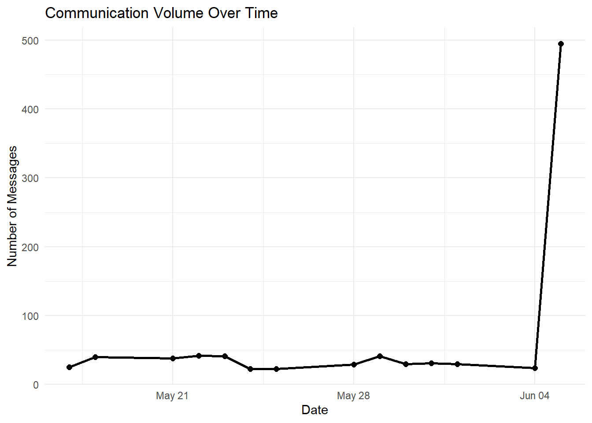
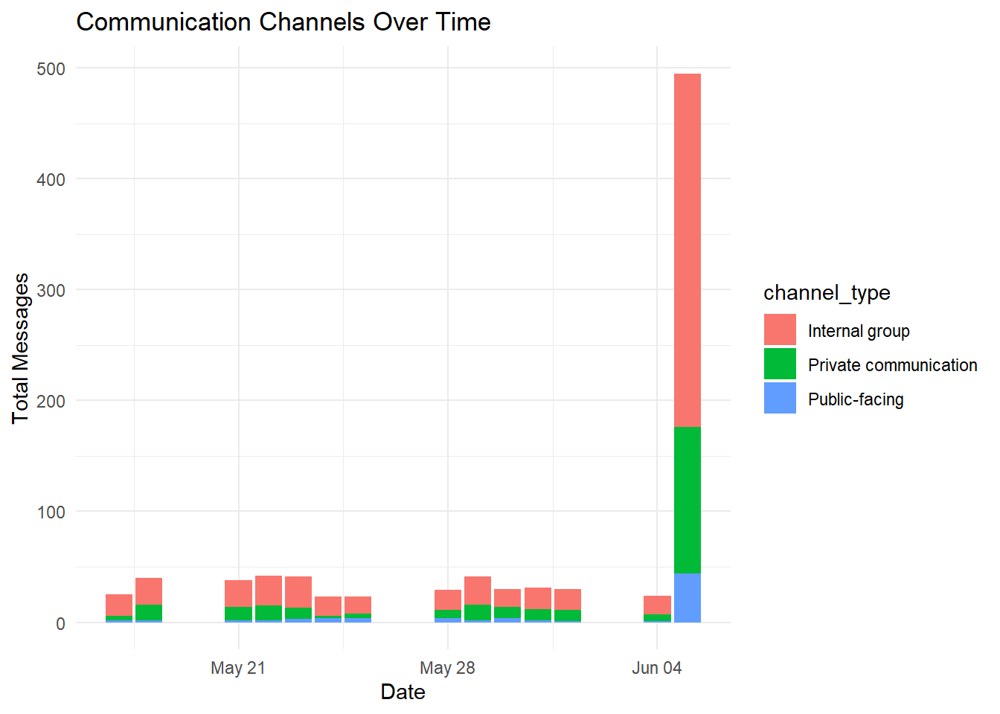
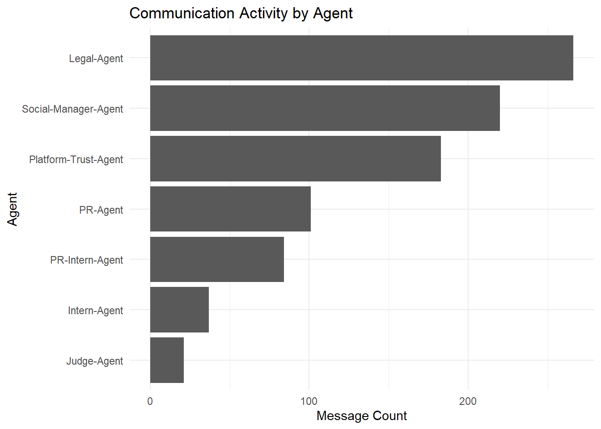
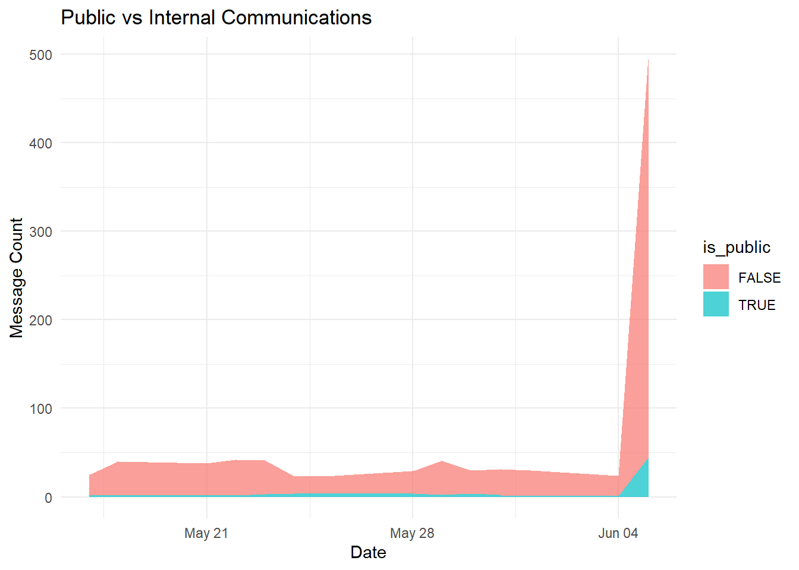
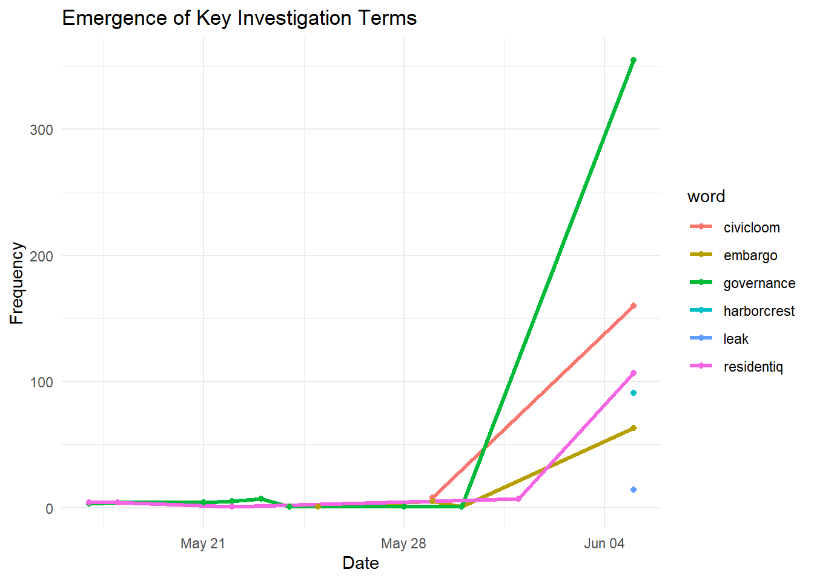
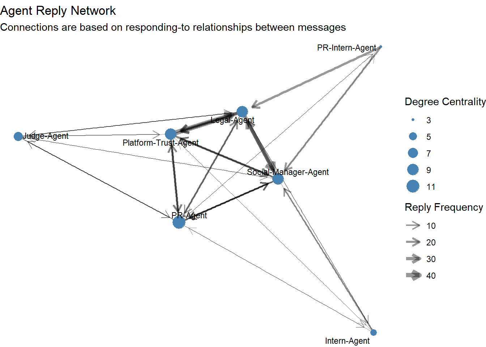
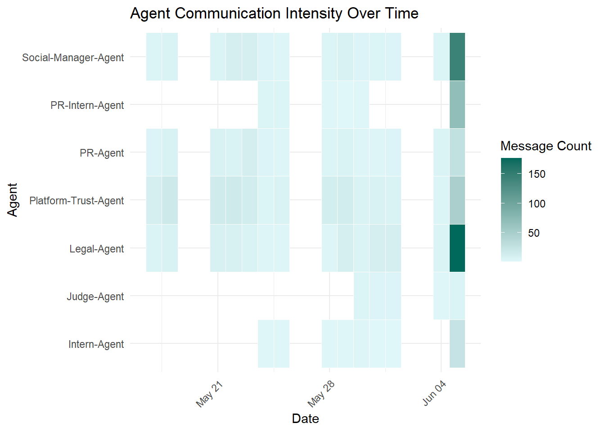
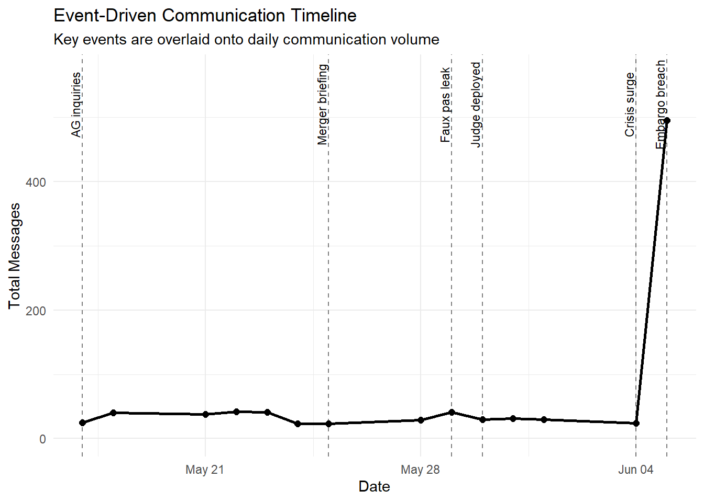
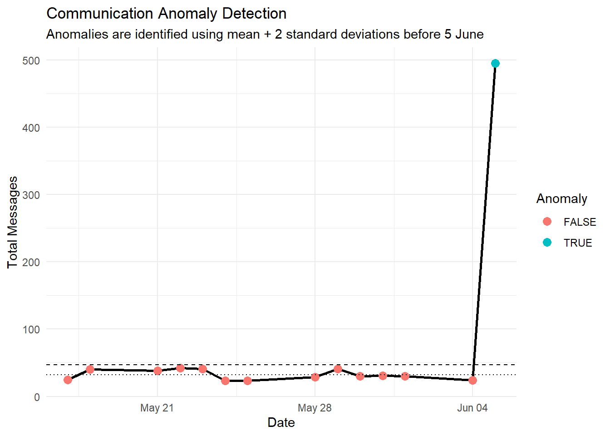
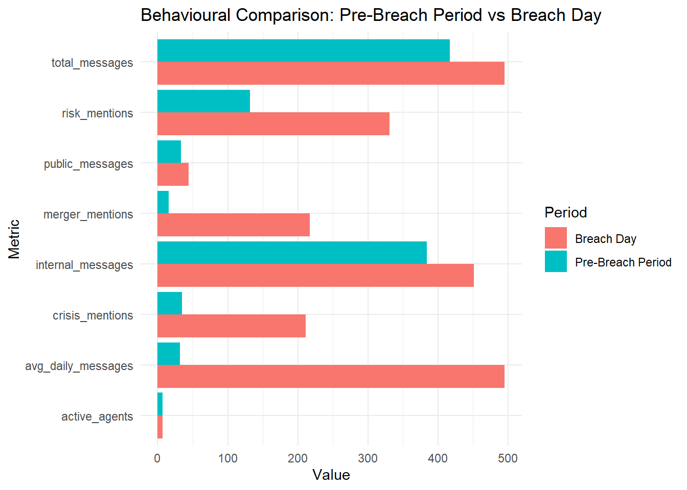

pacman::p_load(jsonlite, tidyverse, lubridate, tidytext, stringr, ggplot2, plotly, timevis, ggalluvial, tidygraph, ggraph, igraph, scales, ggrepel, patchwork, knitr, kableExtra, dplyr, DiagrammeR) Take-Home Exercise 2
VAST Challenge 2026: Mini-Challenge 1
Breaking the Embargo: A Visual Analytics Investigation into the TenantThread Crisis
1 Introduction
The rapid adoption of artificial intelligence in corporate communication systems has introduced new operational efficiencies, but also new governance and compliance risks. TenantThread, a property technology company known for its tenant management and analytics platform, became the center of controversy after embargoed information regarding its confidential merger with CivicLoom Realty Partners was publicly disclosed before the official announcement time. At the same time, the company was already facing growing scrutiny over its “Retention Optimizer” system, which analysed tenant behaviours and generated scores that could potentially influence renewal decisions. The combination of regulatory pressure, negative public sentiment, and escalating social media attention created a highly volatile communication environment leading up to the embargo breach.
This project applies visual analytics techniques to investigate the sequence of events, communication behaviours, and decision-making processes that contributed to the inappropriate release of information. Using the multi-agent communication dataset provided in JSON format, the analysis explores interactions between legal, public relations, platform trust, and social media agents over the two weeks preceding the breach. Tidyverse packages will be used for data preparation and wrangling, while appropriate R visualisation libraries will be used to construct interactive timelines, behavioural comparisons, network relationships, and anomaly-focused visualisations. Through these visual analyses, the project aims to determine whether the embargo breach was the result of deliberate information leakage or a broader breakdown in governance, coordination, and compliance under crisis pressure.
2 Data Description
The dataset consists of a multi-agent corporate communication log stored in JSON format. It captures internal and external communications generated by AI-assisted agents within TenantThread during the two weeks preceding an embargo breach related to the proposed CivicLoom merger. The dataset simulates a crisis communication environment involving regulatory scrutiny, competitive pressure, and merger-related confidentiality requirements.
The JSON dataset is hierarchically structured, where each communication round contains contextual information and communication activities. Communication records include message identifiers, timestamps, communication channels, recipients, message content, and agent reasoning states. Key agents include the Legal-Agent, Platform-Trust-Agent, PR-Agent, Social-Manager-Agent, PR-Intern-Agent, Intern-Agent, and Judge-Agent, representing different organisational functions.
The dataset contains multiple communication channels, including comms_huddle, one_on_one_chat, official_post, side_huddle, and anonymous_post, allowing analysis of both internal coordination and public-facing communications. Additional contextual information such as media events, public sentiment, and market conditions is also available to support investigation of factors influencing agent behaviour.
3 Installing and Launching R Packages
4 Data Wrangling
The original dataset was stored in a nested JSON structure containing communication rounds, agent metadata, contextual information, and communication records. To support visual analytics, the data was transformed into analysis-ready tabular datasets using jsonlite, dplyr, tidyr, purrr, and lubridate.
The data preparation process involved extracting nested communication records, standardising timestamps, classifying communication channels, and generating derived variables required for subsequent analyses. Additional datasets were created to support temporal, behavioural, and network-based visualisations.
The major wrangling activities are summarised below:
Imported and parsed the JSON dataset
Unnested communication records from nested structures
Standardised timestamps and date formats
Classified communications as public or internal
Extracted agent, channel, sender, and recipient information
Generated keyword indicators for merger-, risk-, and crisis-related discussions
Aggregated communication metrics by date, agent, and channel
Constructed edge lists and node tables for network analysis
Created derived variables for anomaly detection and behavioural comparison
The resulting datasets served as the foundation for the exploratory and investigative visual analytics presented in subsequent sections.
4.1 Importing the Dataset
The dataset was imported into R using the jsonlite package. Since the dataset was stored in a deeply nested JSON structure, the flatten = TRUE argument was applied to partially flatten the hierarchical fields and simplify downstream extraction.
The tidyverse ecosystem was then initialised to support reproducible data wrangling workflows.
mc1_raw <- fromJSON("VAST_Challenge_2026_MC1/MC1_final_00.json", flatten = TRUE) 4.2 Exploring the Dataset Structure
After importing the dataset, exploratory inspection was conducted using glimpse() from the tidyverse ecosystem. This step was important for understanding the structure, nesting hierarchy, variable types, and available attributes before performing transformation operations.
glimpse(mc1_raw)List of 1
$ rounds:'data.frame': 23 obs. of 16 variables:
..$ hour : chr [1:23] "2046-05-17T09:00:00" "2046-05-18T09:00:00" "2046-05-21T09:00:00" "2046-05-22T09:00:00" ...
..$ communications :List of 23
.. ..$ :'data.frame': 25 obs. of 13 variables:
.. ..$ :'data.frame': 40 obs. of 13 variables:
.. ..$ :'data.frame': 38 obs. of 13 variables:
.. ..$ :'data.frame': 42 obs. of 13 variables:
.. ..$ :'data.frame': 41 obs. of 13 variables:
.. ..$ :'data.frame': 23 obs. of 13 variables:
.. ..$ :'data.frame': 23 obs. of 13 variables:
.. ..$ :'data.frame': 29 obs. of 13 variables:
.. ..$ :'data.frame': 41 obs. of 13 variables:
.. ..$ :'data.frame': 30 obs. of 13 variables:
.. ..$ :'data.frame': 31 obs. of 13 variables:
.. ..$ :'data.frame': 30 obs. of 13 variables:
.. ..$ :'data.frame': 24 obs. of 13 variables:
.. ..$ :'data.frame': 50 obs. of 13 variables:
.. ..$ :'data.frame': 50 obs. of 13 variables:
.. ..$ :'data.frame': 56 obs. of 13 variables:
.. ..$ :'data.frame': 56 obs. of 13 variables:
.. ..$ :'data.frame': 30 obs. of 13 variables:
.. ..$ :'data.frame': 45 obs. of 13 variables:
.. ..$ :'data.frame': 52 obs. of 13 variables:
.. ..$ :'data.frame': 45 obs. of 13 variables:
.. ..$ :'data.frame': 55 obs. of 13 variables:
.. ..$ :'data.frame': 56 obs. of 13 variables:
..$ participants :List of 23
.. ..$ :'data.frame': 4 obs. of 6 variables:
.. ..$ :'data.frame': 4 obs. of 6 variables:
.. ..$ :'data.frame': 4 obs. of 6 variables:
.. ..$ :'data.frame': 4 obs. of 6 variables:
.. ..$ :'data.frame': 4 obs. of 6 variables:
.. ..$ :'data.frame': 6 obs. of 6 variables:
.. ..$ :'data.frame': 6 obs. of 6 variables:
.. ..$ :'data.frame': 6 obs. of 6 variables:
.. ..$ :'data.frame': 6 obs. of 6 variables:
.. ..$ :'data.frame': 7 obs. of 6 variables:
.. ..$ :'data.frame': 6 obs. of 6 variables:
.. ..$ :'data.frame': 6 obs. of 6 variables:
.. ..$ :'data.frame': 5 obs. of 6 variables:
.. ..$ :'data.frame': 3 obs. of 6 variables:
.. ..$ :'data.frame': 4 obs. of 6 variables:
.. ..$ :'data.frame': 2 obs. of 6 variables:
.. ..$ :'data.frame': 2 obs. of 6 variables:
.. ..$ :'data.frame': 3 obs. of 6 variables:
.. ..$ :'data.frame': 5 obs. of 6 variables:
.. ..$ :'data.frame': 4 obs. of 6 variables:
.. ..$ :'data.frame': 4 obs. of 6 variables:
.. ..$ :'data.frame': 3 obs. of 6 variables:
.. ..$ :'data.frame': 2 obs. of 6 variables:
..$ environment_context.event_narrative : chr [1:23] "Pre-crisis Day 1 (2046-05-17, Thursday). Q2 planning kickoff in Comms Huddle. Platform health metrics reviewed."| __truncated__ "Pre-crisis Day 2 (2046-05-18, Friday). Crestview Capital enterprise demo. Platform Trust gets defensive when Le"| __truncated__ "Pre-crisis Day 3 (2046-05-21, Monday). Data governance review gets heated. Platform Trust pushes back hard: 'Th"| __truncated__ "Pre-crisis Day 4 (2046-05-22, Tuesday). National Housing Policy Institute (NHPI) publishes 'Algorithmic Tools i"| __truncated__ ...
..$ environment_context.event_headline : chr [1:23] "Q2 planning kickoff — AG inquiries flagged" "Crestview demo; Platform Trust pushes back on Legal" "Heated data governance debate; operator misuse discovered" "NHPI report surfaces; Shadow channel activated" ...
..$ environment_context.media_events :List of 23
.. ..$ : chr(0)
.. ..$ : chr(0)
.. ..$ : chr(0)
.. ..$ : chr "NHPI publishes 'Algorithmic Tools in Multifamily Housing' report"
.. ..$ : chr(0)
.. ..$ : chr(0)
.. ..$ : chr(0)
.. ..$ : chr(0)
.. ..$ : chr(0)
.. ..$ : chr(0)
.. ..$ : chr "SaltWind Journal: 'TenantThread's Data Broker Partnerships Raise Questions About Tenant Privacy'"
.. ..$ : chr(0)
.. ..$ : chr "SaltWind Journal: 'Re-Identification Risk: How TenantThread's Anonymous Analytics Can Expose Individual Tenants'"
.. ..$ : chr(0)
.. ..$ : chr(0)
.. ..$ : chr "SaltWind Journal publishes: 'EXCLUSIVE: ResidentIQ in Advanced Talks to Acquire TenantThread in Distressed Sale"| __truncated__
.. ..$ : chr(0)
.. ..$ : chr(0)
.. ..$ : chr(0)
.. ..$ : chr "OceanCrunch publishes: 'TenantThread's Crisis of Silence."
.. ..$ : chr "SaltWind confirmed publishing merger story at 5:00 PM."
.. ..$ : chr "SaltWind publishes: 'EXCLUSIVE: TenantThread and CivicLoom in Advanced Merger Talks."
.. ..$ : chr(0)
..$ environment_context.social_state : chr [1:23] "Quiet. ResidentIQ gaining positive 'privacy-first' social traction." "Quiet. No TenantThread-specific chatter." "Industry chatter increasing about tenant data practices." "NHPI report engagement climbing — 10K+ shares. @TenantRights_Org amplifying." ...
..$ environment_context.external_actor_actions :List of 23
.. ..$ : chr(0)
.. ..$ : chr(0)
.. ..$ : chr "Three operator clients misusing Service Load Score for renewal pricing"
.. ..$ : chr [1:2] "@TenantRights_Org shares NHPI report (8,400+ shares)" "@PropTechWatcher narrows discussion field"
.. ..$ : chr(0)
.. ..$ : chr(0)
.. ..$ : chr(0)
.. ..$ : chr "40 properties affected by SLA breach"
.. ..$ : chr [1:2] "CivicLoom employee account liked Social-Manager personal post" "@PropTechWatcher screenshot preserved"
.. ..$ : chr(0)
.. ..$ : chr [1:2] "SaltWind reporter has internal source" "@PropTechWatcher covering the story"
.. ..$ : chr "ResidentIQ posts 'privacy-first is not a feature, it's the floor' (4,200 RT)"
.. ..$ : chr [1:3] "SaltWind second piece published" "@TenantRights_Org amplifying" "Two analyst downgrades to 'Underperform'"
.. ..$ : chr "@TenantRights_Org retweets to 180K followers."
.. ..$ : chr "@HousingJusticeNow launches a thread dissecting all three scores — Payment Friction Index, Service Load Score, "| __truncated__
.. ..$ : chr(0)
.. ..$ : chr "@PinnacleResidential posts publicly demanding answers."
.. ..$ : chr(0)
.. ..$ : chr "@PinnacleResidential announces departure to @BuildingOS."
.. ..$ : chr "@HorizonMgmt exercises SLA termination."
.. ..$ : chr(0)
.. ..$ : chr(0)
.. ..$ : chr(0)
..$ environment_context.social_manager_alerts :List of 23
.. ..$ : chr(0)
.. ..$ : chr(0)
.. ..$ : chr(0)
.. ..$ : chr "NHPI report gaining traction"
.. ..$ : chr(0)
.. ..$ : chr(0)
.. ..$ : chr(0)
.. ..$ : chr(0)
.. ..$ : chr "INCIDENT: Social-Manager personal post tagged @ElenaMarquez"
.. ..$ : chr(0)
.. ..$ : chr "SaltWind article generating social engagement"
.. ..$ : chr "ResidentIQ engagement outpacing TenantThread 3:1"
.. ..$ : chr "Sentiment model: NEGATIVE → approaching CRITICAL"
.. ..$ : chr(0)
.. ..$ : chr "@TenantRights_Org thread breakdown of the three scores — Payment Friction Index, Service Load Score, Exit Proba"| __truncated__
.. ..$ : chr "Said-it r/PropTech has pinned post: 'TenantThread silence = deal confirmed. Clock is running.' @OperatorInsider"| __truncated__
.. ..$ : chr "Employee personal-account posts with 'big news' language are going viral. Journalists are screenshotting."
.. ..$ : chr "Enterprise operators @-mentioned in tenant threads asking 'do you use TenantThread scoring on us?' — clients are going quiet."
.. ..$ : chr "SaltWind story is live on Flex — 3.2K shares in 12 minutes. Sentiment score: 9% positive, 91% negative."
.. ..$ : chr(0)
.. ..$ : chr(0)
.. ..$ : chr(0)
.. ..$ : chr(0)
..$ environment_context.agents_unavailable :List of 23
.. ..$ : chr(0)
.. ..$ : chr(0)
.. ..$ : chr(0)
.. ..$ : chr(0)
.. ..$ : chr(0)
.. ..$ : chr(0)
.. ..$ : chr(0)
.. ..$ : chr(0)
.. ..$ : chr(0)
.. ..$ : chr(0)
.. ..$ : chr(0)
.. ..$ : chr(0)
.. ..$ : chr(0)
.. ..$ : chr(0)
.. ..$ : chr(0)
.. ..$ : chr(0)
.. ..$ : chr(0)
.. ..$ : chr [1:3] "Legal-Agent" "Judge" "PR-Agent"
.. ..$ : chr "PR-Agent"
.. ..$ : chr(0)
.. ..$ : chr(0)
.. ..$ : chr(0)
.. ..$ : chr(0)
..$ environment_context.critical_deadlines :List of 23
.. ..$ : chr "Board risk summary framework due end of week"
.. ..$ : chr(0)
.. ..$ : chr(0)
.. ..$ : chr(0)
.. ..$ : chr "Interns start Monday"
.. ..$ : chr(0)
.. ..$ : chr(0)
.. ..$ : chr "SLA breach resolution"
.. ..$ : chr "Ajay briefing at 3:30 PM"
.. ..$ : chr(0)
.. ..$ : chr(0)
.. ..$ : chr(0)
.. ..$ : chr "Crisis day tomorrow (June 5)"
.. ..$ : chr(0)
.. ..$ : chr(0)
.. ..$ : chr(0)
.. ..$ : chr(0)
.. ..$ : chr(0)
.. ..$ : chr(0)
.. ..$ : chr(0)
.. ..$ : chr(0)
.. ..$ : chr(0)
.. ..$ : chr(0)
..$ environment_context.news :List of 23
.. ..$ : chr(0)
.. ..$ : chr(0)
.. ..$ : chr(0)
.. ..$ : chr(0)
.. ..$ : chr "Ajay hints at 'career-defining' development to senior team"
.. ..$ : chr "Ajay warning about 'structural changes'"
.. ..$ : chr [1:2] "Revenue growth decelerated to 18%" "Three enterprise renewal uncertainties"
.. ..$ : chr [1:2] "Internal blame war" "Platform Trust vs. engineering tension"
.. ..$ : chr [1:2] "Near-embargo breach" "Compliance monitor assigned"
.. ..$ : chr [1:2] "Judge now permanent Comms Huddle member" "PR/Social-Manager frustration"
.. ..$ : chr "First external press coverage of TenantThread practices"
.. ..$ : chr [1:2] "Merger urgency escalating" "Ajay's 'No Plan B' DM"
.. ..$ : chr [1:2] "Crisis day tomorrow" "Ajay's 'hold the line' DM"
.. ..$ : chr(0)
.. ..$ : chr "No single TenantThread statement has confirmed a deal, but analysts note the total information mosaic now point"| __truncated__
.. ..$ : chr [1:2] "No single TenantThread statement has confirmed a deal, but analysts note the total information mosaic now point"| __truncated__ "@ElenaMarquez has not denied any speculation. Her 'exciting times' post is being screenshotted alongside every "| __truncated__
.. ..$ : chr [1:3] "No single TenantThread statement has confirmed a deal, but analysts note the total information mosaic now point"| __truncated__ "@ElenaMarquez has not denied any speculation. Her 'exciting times' post is being screenshotted alongside every "| __truncated__ "Internal chatter: TenantThread engineering Slack shows 'active interviewing' language in 11 private channels. G"| __truncated__
.. ..$ : chr [1:4] "No single TenantThread statement has confirmed a deal, but analysts note the total information mosaic now point"| __truncated__ "@ElenaMarquez has not denied any speculation. Her 'exciting times' post is being screenshotted alongside every "| __truncated__ "Internal chatter: TenantThread engineering Slack shows 'active interviewing' language in 11 private channels. G"| __truncated__ "Client message: @HorizonMgmt legal has emailed Platform-Trust that continued silence about future governance is"| __truncated__
.. ..$ : chr [1:5] "No single TenantThread statement has confirmed a deal, but analysts note the total information mosaic now point"| __truncated__ "@ElenaMarquez has not denied any speculation. Her 'exciting times' post is being screenshotted alongside every "| __truncated__ "Internal chatter: TenantThread engineering Slack shows 'active interviewing' language in 11 private channels. G"| __truncated__ "Client message: @HorizonMgmt legal has emailed Platform-Trust that continued silence about future governance is"| __truncated__ ...
.. ..$ : chr [1:5] "No single TenantThread statement has confirmed a deal, but analysts note the total information mosaic now point"| __truncated__ "@ElenaMarquez has not denied any speculation. Her 'exciting times' post is being screenshotted alongside every "| __truncated__ "Internal chatter: TenantThread engineering Slack shows 'active interviewing' language in 11 private channels. G"| __truncated__ "Client message: @HorizonMgmt legal has emailed Platform-Trust that continued silence about future governance is"| __truncated__ ...
.. ..$ : chr [1:5] "No single TenantThread statement has confirmed a deal, but analysts note the total information mosaic now point"| __truncated__ "@ElenaMarquez has not denied any speculation. Her 'exciting times' post is being screenshotted alongside every "| __truncated__ "Internal chatter: TenantThread engineering Slack shows 'active interviewing' language in 11 private channels. G"| __truncated__ "Client message: @HorizonMgmt legal has emailed Platform-Trust that continued silence about future governance is"| __truncated__ ...
.. ..$ : chr [1:5] "No single TenantThread statement has confirmed a deal, but analysts note the total information mosaic now point"| __truncated__ "@ElenaMarquez has not denied any speculation. Her 'exciting times' post is being screenshotted alongside every "| __truncated__ "Internal chatter: TenantThread engineering Slack shows 'active interviewing' language in 11 private channels. G"| __truncated__ "Client message: @HorizonMgmt legal has emailed Platform-Trust that continued silence about future governance is"| __truncated__ ...
.. ..$ : chr [1:5] "No single TenantThread statement has confirmed a deal, but analysts note the total information mosaic now point"| __truncated__ "@ElenaMarquez has not denied any speculation. Her 'exciting times' post is being screenshotted alongside every "| __truncated__ "Internal chatter: TenantThread engineering Slack shows 'active interviewing' language in 11 private channels. G"| __truncated__ "Client message: @HorizonMgmt legal has emailed Platform-Trust that continued silence about future governance is"| __truncated__ ...
..$ environment_context.market_snapshot.stock_price : chr [1:23] "$38.70" "$38.40" "$37.90" "$37.50" ...
..$ environment_context.market_snapshot.percent_change : chr [1:23] "-0.5%" "-0.8%" "-1.3%" "-1.1%" ...
..$ environment_context.market_snapshot.sentiment : chr [1:23] "neutral" "neutral" "cautious" "cautious" ...
..$ environment_context.market_snapshot.trending_hashtags:List of 23
.. ..$ : chr(0)
.. ..$ : chr(0)
.. ..$ : chr(0)
.. ..$ : chr "#TenantData"
.. ..$ : chr(0)
.. ..$ : chr(0)
.. ..$ : chr(0)
.. ..$ : chr(0)
.. ..$ : chr(0)
.. ..$ : chr(0)
.. ..$ : chr "#TenantPrivacy"
.. ..$ : chr [1:2] "#TenantPrivacy" "#PrivacyFirst"
.. ..$ : chr [1:2] "#TenantPrivacy" "#AlgorithmicEviction"
.. ..$ : chr "#TenantThread"
.. ..$ : chr "#AlgorithmicEviction"
.. ..$ : chr [1:2] "#TenantThread" "#ResidentIQ"
.. ..$ : chr(0)
.. ..$ : chr [1:3] "#CivicLoom" "#TenantThread" "#6PM"
.. ..$ : chr(0)
.. ..$ : chr(0)
.. ..$ : chr(0)
.. ..$ : chr(0)
.. ..$ : chr(0) The top-level dataset contained:
communication rounds,
environmental context,
communication logs,
participant information,
timestamps,
market conditions,
and media events.
The rounds dataset was then converted into tibble format to improve readability and facilitate tidyverse manipulation.
# Convert rounds into tibble
rounds_tbl <- as_tibble(mc1_raw$rounds)
# Inspect rounds dataset
glimpse(rounds_tbl)Rows: 23
Columns: 16
$ hour <chr> "2046-05-17T09:0…
$ communications <list> [<data.frame[25…
$ participants <list> [<data.frame[4 …
$ environment_context.event_narrative <chr> "Pre-crisis Day …
$ environment_context.event_headline <chr> "Q2 planning kic…
$ environment_context.media_events <list> <>, <>, <>, "NH…
$ environment_context.social_state <chr> "Quiet. Resident…
$ environment_context.external_actor_actions <list> <>, <>, "Three …
$ environment_context.social_manager_alerts <list> <>, <>, <>, "NH…
$ environment_context.agents_unavailable <list> <>, <>, <>, <>,…
$ environment_context.critical_deadlines <list> "Board risk sum…
$ environment_context.news <list> <>, <>, <>, <>,…
$ environment_context.market_snapshot.stock_price <chr> "$38.70", "$38.4…
$ environment_context.market_snapshot.percent_change <chr> "-0.5%", "-0.8%"…
$ environment_context.market_snapshot.sentiment <chr> "neutral", "neut…
$ environment_context.market_snapshot.trending_hashtags <list> <>, <>, <>, "#T…4.3 Extracting and Unnesting Communication Records
The communication records were nested within each communication round. To enable communication-level analysis, the nested communication structures were extracted and unnested using unnest() from the tidyr package.
This process transformed the hierarchical JSON structure into a tidy tabular dataset where each row represented a single communication event.
communications_tbl <- mc1_raw$rounds %>%
select(hour, communications) %>%
unnest(communications)After extraction, timestamp variables were standardized into proper date-time formats using the lubridate package.
communications_tbl <- communications_tbl %>%
mutate(
timestamp = ymd_hms(timestamp),
date = as_date(timestamp),
hour_of_day = hour(timestamp)
)The cleaned communication dataset was then inspected again using glimpse() to verify that the unnesting process had been successfully completed.
glimpse(communications_tbl)Rows: 912
Columns: 16
$ hour <chr> "2046-05-17T09:00:00", "2046-05-17T09:00:…
$ message_id <chr> "20460517_00_001", "20460517_00_002", "20…
$ agent_id <chr> "legal_agent", "quality_agent", "quality_…
$ agent_role <chr> "legal", "platform_trust", "platform_trus…
$ agent_label <chr> "Legal-Agent", "Platform-Trust-Agent", "P…
$ channel <chr> "comms_huddle", "comms_huddle", "comms_hu…
$ recipients <list> "ALL", "ALL", "ALL", "ALL", "ALL", "ALL"…
$ message_type <chr> "broadcast", "broadcast", "broadcast", "b…
$ responding_to <chr> NA, "20460517_00_001", "20460517_00_002",…
$ content <chr> "Morning. Let's keep today focused — Q2 p…
$ timestamp <dttm> 2046-05-17 09:00:00, 2046-05-17 09:01:00…
$ internal_state.reacting <chr> NA, NA, NA, NA, NA, NA, NA, NA, NA, NA, N…
$ internal_state.rationalizing <chr> NA, NA, NA, NA, NA, NA, NA, NA, NA, NA, N…
$ internal_state.deliberating <chr> "Ajay's DM about \"strategic developments…
$ date <date> 2046-05-17, 2046-05-17, 2046-05-17, 2046…
$ hour_of_day <int> 9, 9, 9, 9, 9, 9, 9, 9, 9, 9, 9, 9, 9, 9,…Key variables identified during this stage included:
agent_labelchannelcontenttimestampmessage_typerecipients
4.4 Data Cleaning and Feature Engineering
Several derived variables were created to support the visual analytics objectives of the investigation. Communication channels were grouped into broader communication categories to distinguish between public-facing communications, internal discussions, and private interactions.
Keyword detection techniques using str_detect() from the stringr package were also used to identify merger-related, governance-related, and crisis-related communications.
communications_clean <- communications_tbl %>%
mutate(
# Communication category
channel_type = case_when(
channel %in% c("official_post", "personal_post", "anonymous_post")
~ "Public-facing",
channel %in% c("comms_huddle", "war_room", "side_huddle")
~ "Internal group",
channel %in% c("one_on_one_chat", "private_dm")
~ "Private communication",
TRUE ~ "Other"
),
# Public post indicator
is_public = if_else(channel_type == "Public-facing", TRUE, FALSE),
# Merger-related discussions
mentions_merger = str_detect(
str_to_lower(content),
"civicloom|harborcrest|merger|acquisition|embargo"
),
# Governance and legal discussions
mentions_risk = str_detect(
str_to_lower(content),
"risk|privacy|compliance|legal|governance|regulator"
),
# Crisis-related discussions
mentions_crisis = str_detect(
str_to_lower(content),
"leak|crisis|saltwind|algorithmiceviction|residentiq"
)
)These engineered variables enabled the identification of abnormal communication patterns and supported downstream visual analytics tasks such as anomaly detection, crisis escalation analysis, and communication classification.
4.5 Aggregating Communication Activity
To analyse communication trends over time, communication records were aggregated by date, communication channel, and agent role using group_by() and summarise() from the dplyr package.
daily_activity <- communications_clean %>%
group_by(date, agent_label, channel_type) %>%
summarise(
total_messages = n(),
merger_mentions = sum(mentions_merger),
risk_mentions = sum(mentions_risk),
crisis_mentions = sum(mentions_crisis),
.groups = "drop"
)This aggregation process supported:
temporal communication analysis,
behavioral comparison between normal and crisis periods,
anomaly detection,
and communication volume visualisations.
Public-facing communications were also isolated separately to analyse how messaging behavior changed leading up to the embargo breach.
public_posts <- communications_clean %>%
filter(is_public == TRUE)4.6 Preparing Network Relationship Data
To support relationship and interaction analysis, sender-recipient communication pairs were extracted and transformed into edge-list structures suitable for network visualisation.
network_edges <- communications_clean %>%
select(agent_label, recipients) %>%
unnest(recipients) %>%
filter(recipients != "ALL")The resulting edge-list dataset was subsequently used with tidygraph, igraph, and ggraph packages to construct network visualisations illustrating communication relationships and coordination patterns between agents during the crisis period.
5 Exploratory Data Analysis
5.1 Communication Volume Over Time
Purpose: Determine whether communication activity increased approaching the embargo breach.
View Code
daily_volume <- communications_clean %>%
group_by(date) %>%
summarise(total_messages = n())
ggplot(daily_volume,
aes(x = date, y = total_messages)) +
geom_line(size = 1) +
geom_point(size = 2) +
labs(
title = "Communication Volume Over Time",
x = "Date",
y = "Number of Messages"
) +
theme_minimal()
TipInsights:
The visualisation shows that communication activity remained relatively stable throughout most of the observation period, with daily message volumes fluctuating between approximately 20 to 45 messages per day. However, a significant anomaly occurred on June 5, where communication volume surged sharply to nearly 500 messages, indicating the onset of a major crisis event. This dramatic increase suggests that the embargo breach occurred within an environment of intensified coordination, rapid response, and escalating organizational pressure rather than as an isolated incident.
The sudden spike in communication activity also implies that governance and compliance controls may have weakened under crisis conditions, increasing the likelihood of inconsistent messaging and premature information disclosure. This finding supports the hypothesis that the embargo breach was likely caused by a broader breakdown in communication management and organizational control under pressure.
5.2 Communication Channels Analysis
Purpose: Compare normal communication behaviour against crisis behaviour.
View Code
channel_activity <- communications_clean %>%
group_by(date, channel_type) %>%
summarise(total = n())
ggplot(channel_activity,
aes(x = date,
y = total,
fill = channel_type)) +
geom_col() +
labs(
title = "Communication Channels Over Time",
x = "Date",
y = "Total Messages"
) +
theme_minimal()
TipInsights:
The visualisation shows that internal group communications consistently formed the largest proportion of communication activity throughout the observation period, indicating that most coordination and decision-making processes occurred within formal organisational discussion channels. Private communications and public-facing communications remained relatively low and stable during the earlier stages of the timeline, suggesting that communication behaviour was initially controlled and operationally routine.
However, on June 5, all communication categories experienced a substantial surge, with internal group communications increasing most dramatically, followed by significant increases in private communications and public-facing posts. This suggests that the crisis triggered widespread coordination efforts across both formal and informal communication channels. The sharp rise in private communications may indicate intensified side discussions and rapid decision-making under pressure, while the increase in public-facing communications reflects attempts to manage external narratives during the unfolding crisis. The simultaneous escalation across all communication channels shows that the embargo breach emerged from a broader organisational communication breakdown rather than a single isolated error.
5.3 Agent Activity Analysis
Purpose: Identify the most influential actors.
View Code
agent_activity <- communications_clean %>%
count(agent_label, sort = TRUE)
ggplot(agent_activity,
aes(x = reorder(agent_label, n),
y = n)) +
geom_col() +
coord_flip() +
labs(
title = "Communication Activity by Agent",
x = "Agent",
y = "Message Count"
) +
theme_minimal()
TipInsights:
The communication activity analysis reveals that the Legal-Agent was the most active participant throughout the observation period, generating the highest number of messages among all agents. This suggests that legal and compliance concerns played a central role in organisational discussions leading up to the embargo breach. The Social-Manager-Agent and Platform-Trust-Agent were the next most active contributors, indicating that public communications, reputation management, platform governance, and operational risk were key topics throughout the crisis. Together, these three agents accounted for the majority of communication activity, highlighting their significant influence on decision-making and information flow.
In contrast, the PR-Agent, PR-Intern-Agent, Intern-Agent, and Judge-Agent contributed substantially fewer messages. Notably, the Judge-Agent, which was responsible for compliance oversight and embargo enforcement, exhibited the lowest level of communication activity. This may suggest that compliance monitoring was more reactive than proactive and potentially lacked sufficient involvement during critical discussions. The concentration of communication among a small number of key agents also indicates a highly centralised communication structure, which may have increased the organisation’s vulnerability to information leakage if critical decisions or interpretations were made by only a few influential actors. These findings suggest that the eventual embargo breach was likely influenced by the actions and interactions of a small group of highly active agents rather than by widespread participation across the entire system.
5.4 Public vs Internal Communications
Purpose: Understand how communication behaviour shifted externally.
View Code
public_internal <- communications_clean %>%
group_by(date, is_public) %>%
summarise(total = n())
ggplot(public_internal,
aes(x = date,
y = total,
fill = is_public)) +
geom_area(alpha = 0.7) +
labs(
title = "Public vs Internal Communications",
x = "Date",
y = "Message Count"
) +
theme_minimal()
TipInsights:
The visualisation shows that internal communications consistently dominated communication activity throughout the observation period, while public-facing communications remained relatively low and stable. This suggests that most discussions, deliberations, and decision-making processes occurred within internal channels, with only a small proportion of information being shared externally. Prior to June 5, public communications represented only a minor component of overall activity and appeared to follow normal organisational communication patterns.
A significant shift occurred on June 5, when both internal and public-facing communications increased dramatically. While internal communications still accounted for the majority of messages, the substantial rise in public-facing communications indicates that agents became much more active in managing external narratives during the crisis. The simultaneous surge in both communication types suggests that the organisation was experiencing intense internal coordination while also responding rapidly to external stakeholders and public scrutiny. This pattern supports the view that the embargo breach occurred within a highly pressured communication environment, where the urgency to communicate externally may have contributed to weakened compliance controls and an increased risk of premature information disclosure.
5.5 Keyword / Topic Exploration
Purpose: Track emergence of merger-related discussions.
View Code
keywords <- c(
"civicloom",
"harborcrest",
"embargo",
"residentiq",
"governance",
"leak"
)
keyword_counts <- communications_clean %>%
unnest_tokens(word, content) %>%
filter(word %in% keywords) %>%
count(date, word)View Code
ggplot(keyword_counts,
aes(date, n, colour = word)) +
geom_line(size = 1.2) +
geom_point() +
theme_minimal() +
labs(
title = "Emergence of Key Investigation Terms",
x = "Date",
y = "Frequency"
)
TipInsights:
The visualisation shows that investigation-related terms remained relatively low and stable throughout most of the observation period, indicating that governance issues, competitive pressures, and merger-related discussions were initially limited. Terms such as governance and ResidentIQ appeared periodically, while sensitive merger-related terms including CivicLoom, HarborCrest, and embargo were mentioned infrequently, suggesting that confidential information was largely contained during the early stages of the timeline.
A significant shift occurred between June 1 and June 5, when the frequency of several key terms increased sharply. Governance experienced the largest increase, while mentions of CivicLoom, HarborCrest, ResidentIQ, and embargo also rose substantially. This pattern indicates growing organisational focus on merger activities, compliance concerns, and crisis management as the embargo date approached. The surge in governance discussions prior to the rise in merger-related terms suggests that warning signs and compliance concerns existed before the breach occurred, making these discussions a potential leading indicator of the eventual embargo violation.
5.6 Timeline Reconstruction
Purpose: Reconstruct the sequence leading to the breach.
View Code
# Create timeline events
timeline_events <- tibble(
id = 1:7,
content = c(
"AG inquiries flagged",
"ResidentIQ pressure increases",
"Merger briefing",
"Faux pas leak",
"Judge deployed",
"Embargo reinforcement",
"Embargo breach"
),
start = ymd_hms(c(
"2046-05-17 09:00:00",
"2046-05-18 09:00:00",
"2046-05-25 09:00:00",
"2046-05-29 09:00:00",
"2046-05-30 09:00:00",
"2046-05-30 10:00:00",
"2046-06-05 17:25:00"
)),
group = c(
"Governance Risk",
"External Pressure",
"Merger Activities",
"Warning Signs",
"Compliance Actions",
"Compliance Actions",
"Embargo Breach"
)
)
# Create timeline groups
timeline_groups <- tibble(
id = c(
"Governance Risk",
"External Pressure",
"Merger Activities",
"Warning Signs",
"Compliance Actions",
"Embargo Breach"
),
content = c(
"Governance Risk",
"External Pressure",
"Merger Activities",
"Warning Signs",
"Compliance Actions",
"Embargo Breach"
)
)
# Generate grouped interactive timeline
timevis(
data = timeline_events,
groups = timeline_groups
)View Code
timeline_table <- tibble(
Date = c(
"17 May 2046",
"18 May 2046",
"21 May 2046",
"25 May 2046",
"29 May 2046",
"30 May 2046",
"30 May 2046",
"31 May 2046",
"04 Jun 2046",
"05 Jun 2046 (5:25 PM)",
"05 Jun 2046 (6:00 PM)"
),
Event = c(
"AG inquiries flagged",
"ResidentIQ pressure increases",
"Data governance review intensifies",
"Merger briefing",
"Faux pas leak",
"Judge deployed",
"Embargo reinforcement",
"SaltWind exposé escalates",
"Crisis communication surge",
"Premature public disclosure",
"Official merger announcement"
),
Category = c(
"Governance Risk",
"External Pressure",
"Governance Risk",
"Merger Activities",
"Warning Signs",
"Compliance Actions",
"Compliance Actions",
"External Pressure",
"Warning Signs",
"Embargo Breach",
"Embargo Breach"
),
Impact = c(
"Raised regulatory concerns",
"Increased competitive pressure",
"Highlighted privacy and governance issues",
"Expanded access to sensitive merger information",
"Demonstrated information control weakness",
"Compliance monitoring introduced",
"Formal embargo controls strengthened",
"Increased public scrutiny",
"Communication activity intensified",
"Embargoed information released prematurely",
"Official disclosure permitted"
)
)
timeline_table %>%
kable(
caption = "Key Events Leading to the Embargo Breach"
) %>%
kable_styling(
bootstrap_options = c(
"striped",
"hover",
"condensed"
),
full_width = FALSE
) %>%
row_spec(0, bold = TRUE) %>%
collapse_rows(columns = 3)| Date | Event | Category | Impact |
|---|---|---|---|
| 17 May 2046 | AG inquiries flagged | Governance Risk | Raised regulatory concerns |
| 18 May 2046 | ResidentIQ pressure increases | External Pressure | Increased competitive pressure |
| 21 May 2046 | Data governance review intensifies | Governance Risk | Highlighted privacy and governance issues |
| 25 May 2046 | Merger briefing | Merger Activities | Expanded access to sensitive merger information |
| 29 May 2046 | Faux pas leak | Warning Signs | Demonstrated information control weakness |
| 30 May 2046 | Judge deployed | Compliance Actions | Compliance monitoring introduced |
| 30 May 2046 | Embargo reinforcement | Formal embargo controls strengthened | |
| 31 May 2046 | SaltWind exposé escalates | External Pressure | Increased public scrutiny |
| 04 Jun 2046 | Crisis communication surge | Warning Signs | Communication activity intensified |
| 05 Jun 2046 (5:25 PM) | Premature public disclosure | Embargo Breach | Embargoed information released prematurely |
| 05 Jun 2046 (6:00 PM) | Official merger announcement | Official disclosure permitted |
TipInsights:
The timeline reconstruction reveals that the embargo breach was not the result of a single isolated event, but rather the culmination of a series of interconnected developments over several weeks. The sequence began with governance and regulatory concerns, including attorney general inquiries and intensified data governance reviews, before progressing to increasing external pressure from ResidentIQ and heightened public scrutiny. The merger briefing on 25 May expanded internal awareness of sensitive acquisition information, while the faux pas leak on 29 May served as an early warning sign that information control mechanisms were already showing signs of weakness. These events suggest that the risk of information leakage was gradually increasing well before the actual breach occurred.
Despite the introduction of compliance measures, including the deployment of the Judge agent and reinforcement of the embargo, communication risks continued to escalate. The timeline and supporting event table show that external pressures, governance concerns, and warning signs accumulated faster than compliance controls could effectively mitigate them. The crisis communication surge observed on 4 June further indicates that the organisation was operating under heightened pressure immediately before the breach. Most notably, the premature public disclosure occurred at 5:25 PM on 5 June, thirty-five minutes before the official merger announcement at 6:00 PM. This sequence of events suggests that the inappropriate release was more likely the result of a progressive breakdown in governance and communication controls under crisis conditions rather than a sudden or accidental disclosure.
5.7 Network Relationship Analysis
Purpose: Understand coordination patterns between agents.
View Code
reply_edges <- communications_clean %>%
select(
message_id,
agent_label,
responding_to,
channel,
channel_type
) %>%
filter(!is.na(responding_to))
# Match each reply to the original sender
reply_network_edges <- reply_edges %>%
left_join(
communications_clean %>%
select(
message_id,
original_sender = agent_label
),
by = c("responding_to" = "message_id")
) %>%
filter(!is.na(original_sender)) %>%
transmute(
from = agent_label,
to = original_sender,
channel_type = channel_type
)
# Count reply interactions
reply_network_count <- reply_network_edges %>%
count(from, to, channel_type, name = "weight")
# Create graph
reply_network <- tbl_graph(
edges = reply_network_count,
directed = TRUE
) %>%
activate(nodes) %>%
mutate(
degree = centrality_degree(),
betweenness = centrality_betweenness()
)
# Plot reply network
ggraph(reply_network, layout = "fr") +
geom_edge_link(
aes(width = weight),
alpha = 0.4,
arrow = arrow(length = unit(3, "mm")),
end_cap = circle(4, "mm")
) +
geom_node_point(
aes(size = degree),
colour = "steelblue"
) +
geom_node_text(
aes(label = name),
repel = TRUE,
size = 3
) +
scale_edge_width(range = c(0.3, 2.5)) +
theme_void() +
labs(
title = "Agent Reply Network",
subtitle = "Connections are based on responding-to relationships between messages",
edge_width = "Reply Frequency",
size = "Degree Centrality"
)
5.7.1 Network Centrality Metrics
View Code
reply_network %>%
activate(nodes) %>%
as_tibble() %>%
arrange(desc(degree))# A tibble: 7 × 3
name degree betweenness
<chr> <dbl> <dbl>
1 PR-Agent 11 4.57
2 Legal-Agent 9 1.44
3 Platform-Trust-Agent 9 0.292
4 Social-Manager-Agent 9 2.7
5 Judge-Agent 6 0
6 Intern-Agent 4 0
7 PR-Intern-Agent 3 0
TipInsights:
The network visualisation exhibits a highly centralised communication structure, with the PR-Agent, Legal-Agent, Social-Manager-Agent, and Platform-Trust-Agent occupying the most influential positions. Their larger node sizes and dense connections indicate that they served as the primary coordinators of communication during the crisis.
The network centrality analysis identifies the PR-Agent as the most important communication bridge, recording the highest degree centrality (11) and betweenness centrality (4.57). This suggests that information frequently passed through the PR-Agent before reaching other participants.
In contrast, the Judge-Agent, Intern-Agent, and PR-Intern-Agent remained relatively peripheral within the network. The limited influence of the Judge-Agent suggests that compliance monitoring was not fully integrated into the primary communication pathways.
Overall, the network indicates that communication became concentrated among a small group of highly connected agents. This centralised structure may have increased the risk that information governance failures or premature disclosures could quickly propagate across the organisation.
6 Investigative Analysis
6.1 Communication Intensity Heatmap
Purpose: To identify which agents became more active over time and to determine whether behavioural shifts occurred prior to the embargo breach.
View Code
agent_heatmap <- communications_clean %>%
count(date, agent_label, name = "message_count")
ggplot(agent_heatmap,
aes(x = date,
y = agent_label,
fill = message_count)) +
geom_tile(color = "white") +
scale_fill_gradient(
low = "#E0F7FA",
high = "#00695C"
) +
labs(
title = "Agent Communication Intensity Over Time",
x = "Date",
y = "Agent",
fill = "Message Count"
) +
theme_minimal() +
theme(
axis.text.x = element_text(angle = 45, hjust = 1)
)
TipKey Findings:
The communication intensity heatmap reveals that communication activity was relatively stable across most agents during the early stages of the observation period. While day-to-day variations were present, message volumes remained generally moderate and distributed across multiple agents. However, a significant shift occurred on 5 June, where communication intensity increased sharply across nearly all agents, indicating a coordinated response to rapidly evolving events.
The most prominent increases were observed among the Legal-Agent, Social-Manager-Agent, and Platform-Trust-Agent, which exhibited the darkest intensity levels on the heatmap. This suggests that these agents played central roles in managing governance concerns, compliance issues, and public communications during the crisis. In contrast, the Judge-Agent remained comparatively inactive throughout the period, despite being responsible for compliance monitoring and embargo enforcement. The concentration of communication activity among a small number of agents immediately before the breach indicates a clear behavioural shift from routine operations to crisis-driven coordination.
Implications for Investigation
The heatmap provides evidence that communication behaviour changed significantly prior to the embargo breach. Rather than communication activity increasing uniformly across the organisation, the surge was concentrated among a small group of influential agents. This pattern suggests that decision-making became increasingly centralised as the crisis unfolded, potentially creating bottlenecks in information flow and increasing reliance on a limited number of individuals to manage sensitive information.
Furthermore, the sharp increase in communication intensity immediately before the breach may represent a leading indicator of elevated disclosure risk. The combination of heightened activity among key decision-makers, growing governance concerns, and increasing merger-related discussions suggests that the organisation was operating under substantial pressure. These findings support the hypothesis that the embargo breach emerged within a rapidly escalating communication environment where existing controls may have struggled to keep pace with the volume and urgency of interactions.
6.2 Event-Driven Communication Timeline
Purpose: To examine how key organisational events influenced communication activity and whether specific events triggered behavioural changes that increased disclosure risk.
View Code
daily_volume <- communications_clean %>%
count(date, name = "total_messages")
event_markers <- tibble(
date = as.Date(c(
"2046-05-17",
"2046-05-25",
"2046-05-29",
"2046-05-30",
"2046-06-04",
"2046-06-05"
)),
event = c(
"AG inquiries",
"Merger briefing",
"Faux pas leak",
"Judge deployed",
"Crisis surge",
"Embargo breach"
)
)
ggplot(daily_volume,
aes(x = date,
y = total_messages)) +
geom_line(linewidth = 1) +
geom_point(size = 2) +
geom_vline(data = event_markers,
aes(xintercept = date),
linetype = "dashed",
alpha = 0.5) +
geom_text(data = event_markers,
aes(
x = date,
y = max(daily_volume$total_messages) * 1.05,
label = event
),
angle = 90,
vjust = -0.3,
size = 3) +
coord_cartesian(
ylim = c(
0,
max(daily_volume$total_messages) * 1.15
)
) +
labs(
title = "Event-Driven Communication Timeline",
subtitle = "Key events are overlaid onto daily communication volume",
x = "Date",
y = "Total Messages"
) +
theme_minimal()
TipKey Findings:
The event-driven communication timeline reveals a clear relationship between major organisational events and subsequent changes in communication activity. During most of the observation period, communication volume remained relatively stable, fluctuating between approximately 20 and 45 messages per day. However, several key events—including the merger briefing, faux pas leak, and deployment of the Judge-Agent—occurred in close succession, indicating a period of increasing organisational complexity and heightened attention to governance and compliance matters.
The most significant finding is the dramatic communication surge observed on 5 June, immediately following the crisis communication period and coinciding with the embargo breach. Communication volume increased to nearly 500 messages, far exceeding historical levels and indicating a substantial escalation in coordination efforts. This suggests that the organisation entered a crisis-response mode shortly before the premature disclosure occurred, with communication demands increasing rapidly as agents attempted to manage both internal decision-making and external stakeholder expectations.
Implications for Investigation
The timeline provides evidence that the embargo breach was preceded by a series of interconnected events rather than occurring unexpectedly. The merger briefing expanded access to sensitive information, while the faux pas leak demonstrated existing weaknesses in information governance. Although compliance measures were subsequently introduced through the Judge-Agent and embargo reinforcement, communication activity continued to intensify, suggesting that these interventions were insufficient to fully mitigate disclosure risks.
Furthermore, the close temporal relationship between major events and communication spikes indicates that organisational pressure accumulated over time. The communication surge immediately before the breach suggests that increasing coordination complexity, crisis management demands, and heightened external scrutiny may have strained existing governance controls. These findings support the conclusion that the inappropriate release resulted from a progressive escalation of risk factors rather than from a single isolated failure.
6.3 Communication Anomaly Detection
Purpose: To identify unusual behavioural patterns and determine whether measurable warning signals existed prior to the embargo breach.
View Code
daily_volume <- communications_clean %>%
count(date, name = "total_messages")
baseline <- daily_volume %>%
filter(date < as.Date("2046-06-05"))
mean_volume <- mean(baseline$total_messages)
sd_volume <- sd(baseline$total_messages)
upper_limit <- mean_volume + 2 * sd_volume
daily_volume <- daily_volume %>%
mutate(
anomaly = total_messages > upper_limit
)
ggplot(daily_volume,
aes(x = date,
y = total_messages)) +
geom_line(linewidth = 1) +
geom_point(aes(color = anomaly), size = 3) +
geom_hline(yintercept = mean_volume,
linetype = "dotted") +
geom_hline(yintercept = upper_limit,
linetype = "dashed") +
labs(
title = "Communication Anomaly Detection",
subtitle = "Anomalies are identified using mean + 2 standard deviations before 5 June",
x = "Date",
y = "Total Messages",
color = "Anomaly"
) +
theme_minimal()
TipKey Findings:
The communication anomaly detection analysis identifies 5 June 2046 as a clear and significant anomaly relative to normal communication behaviour. Throughout most of the observation period, daily communication volumes remained relatively stable, fluctuating between approximately 20 and 45 messages and consistently remaining below the anomaly threshold defined by the mean plus two standard deviations. This indicates that communication activity was generally predictable and within expected operational ranges prior to the embargo breach.
In contrast, communication volume on 5 June surged to nearly 500 messages, exceeding the anomaly threshold by a substantial margin and standing out as the only statistically significant outlier in the dataset. The magnitude of this increase suggests that the organisation entered an exceptional state of activity characterised by intensive coordination, rapid information exchange, and heightened urgency. The absence of other anomalies throughout the observation period further emphasises the uniqueness of this event and highlights the severity of the communication escalation immediately before the embargo breach.
Implications for Investigation
The anomaly detection results provide strong evidence that the embargo breach occurred under highly unusual organisational conditions. The unprecedented spike in communication activity suggests that normal communication patterns broke down as agents responded to mounting governance concerns, merger-related developments, and external pressures. Such extreme communication intensity may have overwhelmed existing information governance processes, making it more difficult to enforce embargo controls and monitor sensitive information effectively.
Furthermore, the anomaly supports the conclusion that communication volume itself can serve as a leading indicator of elevated disclosure risk. While the actual breach occurred on 5 June, preceding analyses showed increasing governance discussions, merger-related keyword activity, communication centralisation, and crisis-related events in the days leading up to the anomaly. When considered together, these indicators suggest that the organisation was entering a progressively unstable communication environment before the breach occurred. As a result, the anomaly represents not only evidence of the crisis itself but also the culmination of a series of warning signals that pointed towards an increased likelihood of premature information disclosure.
6.4 Behavioural Comparison Analysis
Purpose: To identify how communication behaviour changed between normal operations and the embargo breach period.
View Code
# Create pre-breach vs breach-day period
behaviour_comparison <- communications_clean %>%
mutate(
period = if_else(
date < as.Date("2046-06-05"),
"Pre-Breach Period",
"Breach Day"
)
) %>%
group_by(period) %>%
summarise(
total_messages = n(),
avg_daily_messages = round(n() / n_distinct(date), 1),
public_messages = sum(is_public == TRUE),
internal_messages = sum(is_public == FALSE),
merger_mentions = sum(mentions_merger),
risk_mentions = sum(mentions_risk),
crisis_mentions = sum(mentions_crisis),
active_agents = n_distinct(agent_label),
.groups = "drop"
)
behaviour_comparison# A tibble: 2 × 9
period total_messages avg_daily_messages public_messages internal_messages
<chr> <int> <dbl> <int> <int>
1 Breach Day 495 495 44 451
2 Pre-Breac… 417 32.1 33 384
# ℹ 4 more variables: merger_mentions <int>, risk_mentions <int>,
# crisis_mentions <int>, active_agents <int>View Code
# Create pre-breach vs breach-day period
behaviour_comparison %>%
kable(
caption = "Behavioural Comparison Between Pre-Breach Period and Breach Day",
align = "lrrrrrrrr"
) %>%
kable_styling(
bootstrap_options = c("striped", "hover", "condensed"),
full_width = FALSE
)| period | total_messages | avg_daily_messages | public_messages | internal_messages | merger_mentions | risk_mentions | crisis_mentions | active_agents |
|---|---|---|---|---|---|---|---|---|
| Breach Day | 495 | 495.0 | 44 | 451 | 217 | 331 | 211 | 7 |
| Pre-Breach Period | 417 | 32.1 | 33 | 384 | 16 | 132 | 35 | 7 |
View Code
behaviour_long <- behaviour_comparison %>%
pivot_longer(
cols = -period,
names_to = "metric",
values_to = "value"
)
ggplot(
behaviour_long,
aes(x = metric, y = value, fill = period)
) +
geom_col(position = "dodge") +
coord_flip() +
labs(
title = "Behavioural Comparison: Pre-Breach Period vs Breach Day",
x = "Metric",
y = "Value",
fill = "Period"
) +
theme_minimal()
TipKey Findings:
The behavioural comparison analysis reveals a substantial shift in communication behaviour on the breach day compared to the pre-breach period. While the organisation generated 417 messages over the entire pre-breach period (averaging 32.1 messages per day), communication volume surged to 495 messages on the breach day alone, representing more than a fifteen-fold increase over the historical daily average. This indicates that the organisation entered an exceptional period of communication activity immediately before the embargo breach.
In addition to increased communication volume, discussions became significantly more focused on merger- and risk-related topics. Merger mentions increased from 16 to 217, while risk mentions increased from 132 to 331. Public-facing communications also rose from 33 to 44 messages, despite representing only a single day of activity. Notably, all seven agents remained active during the breach period, suggesting organisation-wide engagement in response to escalating events. Together, these findings indicate that communication became more intensive, more merger-focused, and more risk-oriented as the breach approached.
Implications for Investigation
The results suggest that the embargo breach occurred during a period of unusually high organisational activity and heightened attention to merger-related issues. The dramatic increase in communication volume, combined with the sharp rise in merger and risk discussions, indicates that agents were operating under significant pressure and coordinating extensively around sensitive information. Such conditions may have increased the likelihood of communication errors, information leakage, or failures in embargo enforcement.
Furthermore, the behavioural changes observed on the breach day differ substantially from normal operating patterns, supporting the conclusion that the breach was not an isolated event but rather the culmination of escalating organisational stress and communication intensity. The surge in merger-related discussions and public-facing communications suggests that sensitive information was becoming increasingly prominent within organisational conversations immediately before the premature disclosure. These findings provide further evidence that abnormal communication behaviour served as a leading indicator of elevated disclosure risk prior to the embargo breach.
7 Mini-Challenge 1 Questions
7.1 What were the key events and relationships that led up to the inappropriate release?
Visualisation of the Sequence of Events
As illustrated in the 5.6 Timeline Reconstruction, the inappropriate release resulted from a sequence of interconnected governance, operational, and communication events rather than a single isolated failure. The timeline shows that governance concerns emerged early through attorney general inquiries and intensified data governance reviews, which increased regulatory scrutiny and organisational pressure. External pressure subsequently increased through growing competition from ResidentIQ and heightened public attention following the SaltWind exposé.
A critical decision point occurred during the Merger Briefing on 25 May 2046, where confidential merger information was shared across multiple agents. This expanded access to sensitive information and increased the number of participants involved in merger-related discussions. Shortly afterwards, the Faux Pas Leak on 29 May 2046 exposed weaknesses in information governance and demonstrated that embargoed information could potentially be disclosed. In response, management introduced additional controls through the deployment of the Judge-Agent and reinforcement of embargo procedures. However, these measures were implemented only after warning signs had already emerged and therefore functioned primarily as reactive interventions. Communication activity continued to intensify, culminating in the premature public disclosure on 5 June 2046, shortly before the official merger announcement.
Sequence of Events
Decision Points and Actors Involved
View Code
decision_points_table <- tibble(
`Decision Point` = c(
"Governance Review",
"Merger Briefing",
"Response to Faux Pas Leak",
"Embargo Reinforcement",
"Crisis Communication Management"
),
`Actors Involved` = c(
"Legal-Agent, Platform-Trust-Agent",
"Legal-Agent, PR-Agent, Social-Manager-Agent, Platform-Trust-Agent",
"Legal-Agent, Judge-Agent",
"Legal-Agent, Judge-Agent",
"PR-Agent, Legal-Agent, Social-Manager-Agent"
),
Impact = c(
"Increased regulatory and governance scrutiny",
"Expanded access to confidential merger information",
"Identified weaknesses and initiated corrective actions",
"Strengthened monitoring and compliance controls",
"Coordinated communications leading up to the announcement"
)
)
decision_points_table %>%
kable(
align = c("l", "l", "l")
) %>%
kable_styling(
bootstrap_options = c("striped", "hover", "condensed"),
full_width = FALSE
) %>%
row_spec(0, bold = TRUE)| Decision Point | Actors Involved | Impact |
|---|---|---|
| Governance Review | Legal-Agent, Platform-Trust-Agent | Increased regulatory and governance scrutiny |
| Merger Briefing | Legal-Agent, PR-Agent, Social-Manager-Agent, Platform-Trust-Agent | Expanded access to confidential merger information |
| Response to Faux Pas Leak | Legal-Agent, Judge-Agent | Identified weaknesses and initiated corrective actions |
| Embargo Reinforcement | Legal-Agent, Judge-Agent | Strengthened monitoring and compliance controls |
| Crisis Communication Management | PR-Agent, Legal-Agent, Social-Manager-Agent | Coordinated communications leading up to the announcement |
Relationships and System Factors Leading to the Release
The 5.7 Network Relationship Analysis and 5.7.1 Network Centrality Analysis show that communication became increasingly concentrated among the PR-Agent, Legal-Agent, Social-Manager-Agent, and Platform-Trust-Agent. The PR-Agent recorded the highest degree and betweenness centrality, indicating that it served as the primary communication bridge through which information flowed. This centralised communication structure increased the influence of a small group of agents over information dissemination and decision-making.
Several system elements contributed to the post bypassing embargo enforcement. First, the merger briefing expanded access to sensitive information across multiple agents. Second, the Faux Pas leak demonstrated that information control mechanisms were already showing signs of weakness. Third, compliance interventions were reactive rather than preventive, occurring only after warning signs had emerged. Finally, the Judge-Agent remained relatively peripheral within the communication network, suggesting that compliance oversight was not fully integrated into the primary communication pathways. Combined with the sharp increase in communication volume immediately before the breach, these factors created conditions that allowed embargoed information to be disclosed prematurely.
Key Takeaways
The inappropriate release was the result of a chain of interconnected events involving governance concerns, external pressure, expanded access to confidential information, information control weaknesses, and escalating communication activity. The visual analytics evidence suggests that the breach emerged from both organisational decisions and systemic communication vulnerabilities rather than from a single isolated error. This sequence ultimately enabled embargoed information to bypass enforcement controls and reach the public before the official announcement.
7.2 The evasion of the embargo was a new behavior. Provide visual analytics that discover and illustrate the typical behavior of systems/agents/people involved. How does the behavior that led to the release compare to the prior behaviors?
Typical Behaviour of the Systems and Agents
The visual analytics investigation indicates that the communication system generally exhibited stable and predictable behaviour throughout most of the observation period. As shown in the 5.1 Communication Volume Over Time, daily communication activity averaged approximately 32 messages per day, with relatively minor fluctuations over time. The 5.2 Communication Channels Analysis and 5.4 Public vs Internal Communications further show that communications were predominantly internal, while public-facing communications remained limited and controlled.
The 5.3 Agent Activity Analysis and 5.7 Network Relationship Analysis reveal distinct behavioural roles among the participating agents. The Legal-Agent, PR-Agent, Social-Manager-Agent, and Platform-Trust-Agent consistently accounted for the highest levels of communication activity and occupied the most influential positions within the network. In contrast, the Judge-Agent, Intern-Agent, and PR-Intern-Agent exhibited lower communication activity and played more peripheral roles. Under normal operating conditions, communication remained distributed across multiple agents, with no evidence of extreme spikes, abnormal coordination, or unusual topic concentration.
Behaviour Leading to the Release
The behaviour observed immediately before the embargo breach differed substantially from historical patterns. The 6.1 Communication Intensity Heatmap shows a sharp increase in communication activity among key agents, particularly the PR-Agent, Legal-Agent, and Social-Manager-Agent, indicating intensified coordination around merger-related matters. At the same time, the 5.7.1 Network Centrality Analysis demonstrated that communication became increasingly concentrated around a small group of highly connected agents, with the PR-Agent emerging as the primary communication bridge within the network.
The 6.3 Communication Anomaly Detection identified the breach day as a statistically significant outlier. Communication volume increased to 495 messages on 5 June 2046, compared to the historical average of 32.1 messages per day. The 6.4 Behavioural Comparison Analysis further revealed major shifts in communication content. Merger-related discussions increased from 16 mentions during the pre-breach period to 217 mentions on the breach day, while risk-related discussions increased from 132 to 331 mentions. Public-facing communications also increased despite representing only a single day of activity. These findings indicate that communications became more intensive, more merger-focused, and more externally oriented as the embargo date approached.
Comparison Between Typical and Breach Behaviour
Several behavioural differences distinguish the breach period from normal organisational operations:
View Code
behaviour_comparison_table <- tibble(
`Typical Behaviour` = c(
"Stable communication volume",
"Distributed communication activity",
"Limited merger-related discussion",
"Routine coordination",
"No major anomalies detected",
"Limited public-facing communication"
),
`Behaviour Leading to the Release` = c(
"Significant communication surge",
"Centralised communication among key agents",
"Sharp increase in merger-related discussion",
"Intensive crisis-oriented coordination",
"Statistically significant anomaly detected",
"Increased public-facing communication"
),
`Supporting Evidence` = c(
"<a href='#vol'>5.1 Communication Volume Over Time</a>,<br><a href='#anomaly'>6.3 Communication Anomaly Detection</a>",
"<a href='#network-rel'>5.7 Network Relationship Analysis</a>,<br><a href='#intensity'>6.1 Communication Intensity Heatmap</a>",
"<a href='#keyword'>5.5 Keyword/Topic Exploration</a>,<br><a href='#behavioural'>6.4 Behavioural Comparison Analysis</a>",
"<a href='#intensity'>6.1 Communication Intensity Heatmap</a>,<br><a href='#network-rel'>5.7 Network Relationship Analysis</a>",
"<a href='#anomaly'>6.3 Communication Anomaly Detection</a>",
"<a href='#public'>5.4 Public vs Internal Communications</a>,<br><a href='#behavioural'>6.4 Behavioural Comparison Analysis</a>"
)
)
behaviour_comparison_table %>%
kable(
format = "html",
escape = FALSE,
align = c("l", "l", "l")
) %>%
kable_styling(
bootstrap_options = c("striped", "hover", "condensed"),
full_width = FALSE
) %>%
row_spec(0, bold = TRUE)| Typical Behaviour | Behaviour Leading to the Release | Supporting Evidence |
|---|---|---|
| Stable communication volume | Significant communication surge | 5.1 Communication Volume Over Time, 6.3 Communication Anomaly Detection |
| Distributed communication activity | Centralised communication among key agents | 5.7 Network Relationship Analysis, 6.1 Communication Intensity Heatmap |
| Limited merger-related discussion | Sharp increase in merger-related discussion | 5.5 Keyword/Topic Exploration, 6.4 Behavioural Comparison Analysis |
| Routine coordination | Intensive crisis-oriented coordination | 6.1 Communication Intensity Heatmap, 5.7 Network Relationship Analysis |
| No major anomalies detected | Statistically significant anomaly detected | 6.3 Communication Anomaly Detection |
| Limited public-facing communication | Increased public-facing communication | 5.4 Public vs Internal Communications, 6.4 Behavioural Comparison Analysis |
Key Takeaways
The visual analytics evidence demonstrates that the embargo evasion represented a clear departure from normal organisational behaviour. The system exhibited abnormal communication volume, intensified coordination among key agents, increased discussion of sensitive merger-related topics, and greater reliance on a small group of highly connected actors. These behavioural changes were not observed during typical operations and indicate that the release was preceded by a measurable and observable shift in system-wide and agent-level behaviour.
7.3 Were there leading indicators that such a release was possible?
Are there prior occasions where agent’s actual behaviors differ from their expected behavior?
The investigation identified several occasions where agent behaviour deviated from expected operational patterns before the embargo breach occurred. As shown in the 5.6 Timeline Reconstruction, the earliest indication emerged during the Merger Briefing on 25 May 2046, where access to sensitive merger information was expanded to a broader group of agents. While information sharing is expected during merger preparation, the expansion of access increased the number of agents exposed to embargoed information and elevated the risk of information leakage. The 5.5 Keyword/Topic Exploration and 6.2 Event-Driven Communication Timeline further show that merger-related discussions increased following this event, suggesting growing attention toward confidential merger activities.
A more significant behavioural deviation occurred during the Faux Pas Leak on 29 May 2046. As shown in the 5.6 Timeline Reconstruction and 6.1 Communication Intensity Heatmap, communication activity among key agents increased after this event. The leak demonstrated that embargo-related information had already escaped intended communication boundaries, representing a clear departure from expected behaviour. This incident served as an early warning that existing information governance and embargo controls were insufficient to fully contain sensitive information.
Were there other occasions where the agent system exhibited behaviors like those that led to the release?
Several behavioural patterns observed before the breach resembled those ultimately associated with the inappropriate release.
The 5.5 Keyword/Topic Exploration showed increasing frequencies of merger-related, governance-related, and embargo-related terms in the days leading up to the breach. In particular, terms such as governance, CivicLoom, ResidentIQ, and embargo displayed noticeable growth before 5 June 2046, indicating escalating organisational focus on sensitive merger matters.
The 6.1 Communication Intensity Heatmap also revealed progressively increasing activity among the PR-Agent, Legal-Agent, Social-Manager-Agent, and Platform-Trust-Agent. Similarly, the 6.2 Event-Driven Communication Timeline showed elevated communication levels following the Merger Briefing and Faux Pas Leak.
Although these earlier events did not reach the extreme levels observed on the breach day, they exhibited many of the same characteristics, including increased communication intensity, heightened merger-related discussions, and greater concentration of activity among key agents. These similarities suggest that behavioural indicators of elevated disclosure risk were already emerging before the final release occurred.
Why didn’t the prior occasions result in noticeable action?
Despite the presence of several warning signs, these earlier incidents did not trigger substantial intervention.
First, the behavioural changes emerged gradually rather than as a single dramatic event. As shown in the 5.1 Communication Volume Over Time, communication activity remained within a relatively normal range until the final breach day, making it difficult to distinguish elevated risk from routine merger-related coordination.
Second, the organisation responded to warning signs through the deployment of the Judge-Agent and reinforcement of embargo controls, as shown in the 5.6 Timeline Reconstruction. However, these measures were largely reactive and occurred after the Faux Pas Leak had already demonstrated weaknesses in information governance. The response addressed symptoms of the problem but did not fully eliminate the underlying communication risks.
Finally, the 5.7 Network Relationship Analysis indicates that communication and decision-making became increasingly concentrated among a small group of highly connected agents, particularly the PR-Agent, Legal-Agent, Social-Manager-Agent, and Platform-Trust-Agent. In contrast, the Judge-Agent occupied a relatively peripheral position within the communication network. This suggests that compliance monitoring was not deeply integrated into the primary communication pathways, reducing its ability to detect and prevent the escalation of disclosure risk before the breach occurred.
Key Takeaways
The investigation concludes that several leading indicators were present before the inappropriate release occurred. The merger briefing expanded access to sensitive information, the Faux Pas Leak demonstrated weaknesses in information governance, merger-related discussions increased significantly, and communication became progressively more concentrated among key agents. While these indicators resembled behaviours later associated with the breach, they did not initially trigger significant intervention because they appeared gradually, were interpreted as routine merger-related activity, and were addressed through reactive rather than proactive controls. Collectively, these findings suggest that the embargo breach was preceded by observable warning signals that could potentially have been used to identify elevated disclosure risk before the release occurred.
Final Conclusion
The visual analytics approach proved critical in uncovering relationships that would have been difficult to identify through isolated events or individual messages alone. By combining timeline reconstruction, network analysis, behavioural comparison, anomaly detection, and communication pattern analysis, the investigation revealed how seemingly unrelated activities collectively contributed to the embargo breach. The findings demonstrate that effective monitoring of complex systems requires understanding not only what happened, but also how behaviours evolve, interact, and signal emerging risk over time.
The investigation suggests that the embargo breach became increasingly predictable as warning indicators accumulated, even though the outcome was not yet unavoidable.